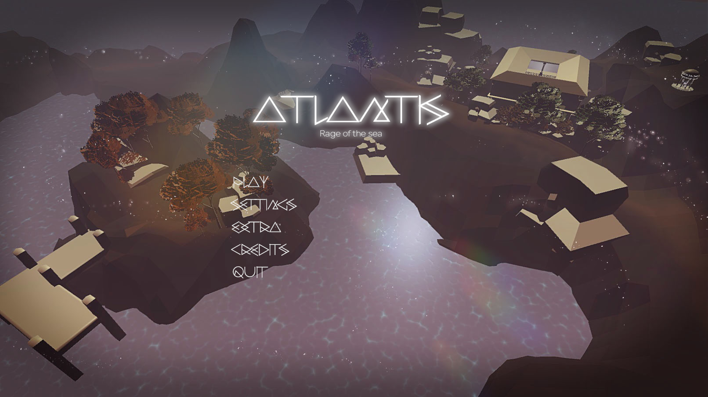
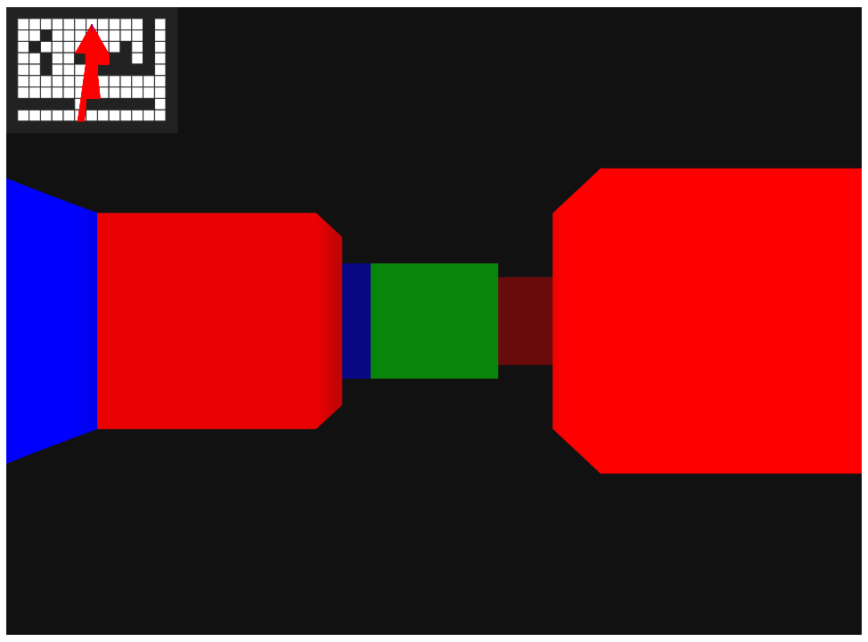
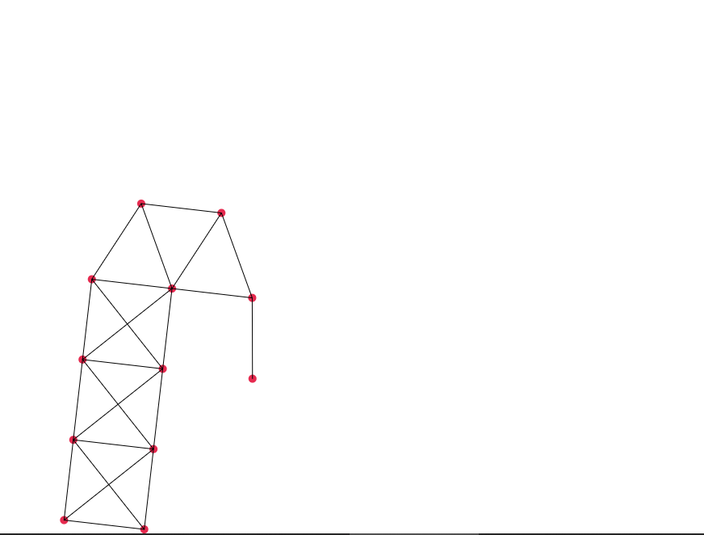
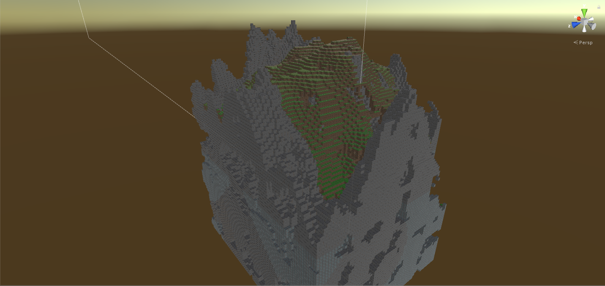

A group project based on the myth of Atlantis. We designed and built a full game experience around the lore, combining exploration with underwater mechanics.

Recreating Rayman 3D from only a few seconds of footage. A technical exercise in reverse-engineering game design decisions and implementing them faithfully.

A Metroidvania-style game set in space. My first major project, focused on non-linear exploration, progression systems, and atmosphere-driven level design.

A raycasting renderer built from scratch in JavaScript, recreating the core rendering technique behind Wolfenstein 3D. Pure math — no 3D library.

A custom Verlet integration physics engine written in JavaScript. Built to understand constraint-based simulation and cloth/rope dynamics from first principles.

An ongoing attempt at recreating Minecraft to understand voxel engine architecture — chunk generation, mesh building, and procedural terrain. Still in development.